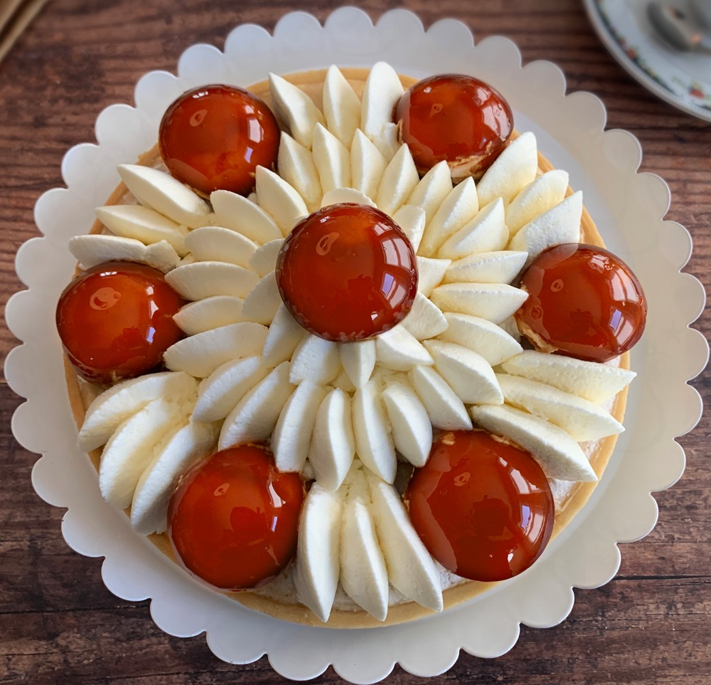

Religieuse
Religieuse is a classic French pastry that resembles a miniature tower of cream-filled choux buns, with one smaller choux puff stacked on top of a larger one. Decorated with icing and piped buttercream, its name, meaning "nun," likely comes from its shape and appearance, which is thought to resemble a nun in her habit. This delicate and delicious dessert is a staple of French pâtisserie, recognized for its unique shape and rich, creamy filling.
History of Religieuse
The Religieuse dates back to the mid-19th century and was developed in France alongside the famous éclair. Both pastries share a choux pastry base, but the Religieuse is differentiated by its two-layered structure and intricate decoration. The pastry is believed to have been created by French pastry chefs in an effort to make a more visually impressive version of the éclair, pairing its cream filling with a unique and playful presentation. By the late 19th century, it had gained popularity across France and became a classic in French pastry shops.
Religieuse Recipe
Ingredients

- For the Choux Pastry:
- 1/2 cup (120 ml) water
- 1/2 cup (120 ml) milk
- 1/2 cup (115 g) unsalted butter
- 1 cup (125 g) all-purpose flour
- 1/2 tsp salt
- 1 tbsp sugar
- 4 large eggs
- For the Pastry Cream Filling:
- 2 cups (480 ml) whole milk
- 1/2 cup (100 g) sugar
- 4 large egg yolks
- 1/4 cup (30 g) cornstarch
- 1 tsp vanilla extract
- 2 tbsp unsalted butter, softened
- For Decoration:
- Icing in desired colors, traditionally chocolate or coffee-flavored
- Piped buttercream for decoration
Instructions
- Make the Choux Pastry:
- Preheat your oven to 375°F (190°C) and line a baking sheet with parchment paper.
- In a medium saucepan, bring water, milk, butter, salt, and sugar to a boil.
- Remove from heat, add flour, and stir vigorously until the mixture forms a smooth ball.
- Return to heat and cook for 1-2 minutes, stirring constantly, to dry out the dough.
- Transfer to a mixing bowl. Add eggs one at a time, mixing thoroughly after each addition until the dough is smooth and glossy.
- Transfer the dough to a piping bag. Pipe 8 large and 8 small rounds onto the baking sheet.
- Bake for 20-25 minutes or until golden brown. Cool completely.
- Prepare the Pastry Cream:
- Heat milk in a saucepan until just starting to simmer.
- In a separate bowl, whisk egg yolks, sugar, and cornstarch until pale and creamy.
- Slowly pour the hot milk into the egg mixture, whisking constantly.
- Return to the saucepan and cook over medium heat until thickened, stirring constantly.
- Remove from heat, add butter and vanilla extract, and whisk until smooth. Cool completely.
- Assemble the Religieuse:
- Fill a piping bag with pastry cream and pipe it into the bottom of each choux puff through a small hole.
- Spread icing on the tops of the puffs, then stack a smaller puff on top of a larger one.
- Pipe buttercream around the edges of each stack where the choux meet.
Tips for Making a Perfect Saint Honoré
- Use a Steady Hand with Caramel:
- Caramel can be tricky, so avoid stirring once the sugar has dissolved. Instead, gently swirl the pan to prevent crystallization.
- Choux Pastry Consistency:
- Your choux dough should be smooth and shiny before piping. Make sure to dry out the dough enough on the stove to prevent deflation during baking.
- Stabilize the Crème Chiboust:
- If you plan to make the cake in advance, consider adding gelatin to the crème chiboust for stability, especially if using whipped cream instead of meringue.
- Decorate Carefully:
- For a classic look, pipe the crème chiboust in a decorative way, such as swirls or rosettes, to give the cake a polished finish.
- Plan for Assembly Close to Serving Time:
- The Saint Honoré cake is best assembled close to serving time to keep the choux crisp and the caramel fresh.
Best Season to Bake Saint Honoré
Saint Honoré is a beautiful, celebratory dessert often associated with spring and early summer festivities, especially around May 16, the feast day of Saint Honoré. The flavors and light cream filling make it suitable for warmer weather, and it’s often enjoyed during spring and summer holidays, weddings, or special occasions. However, due to its classic nature, it’s equally loved and made year-round in pâtisseries and for various celebrations.